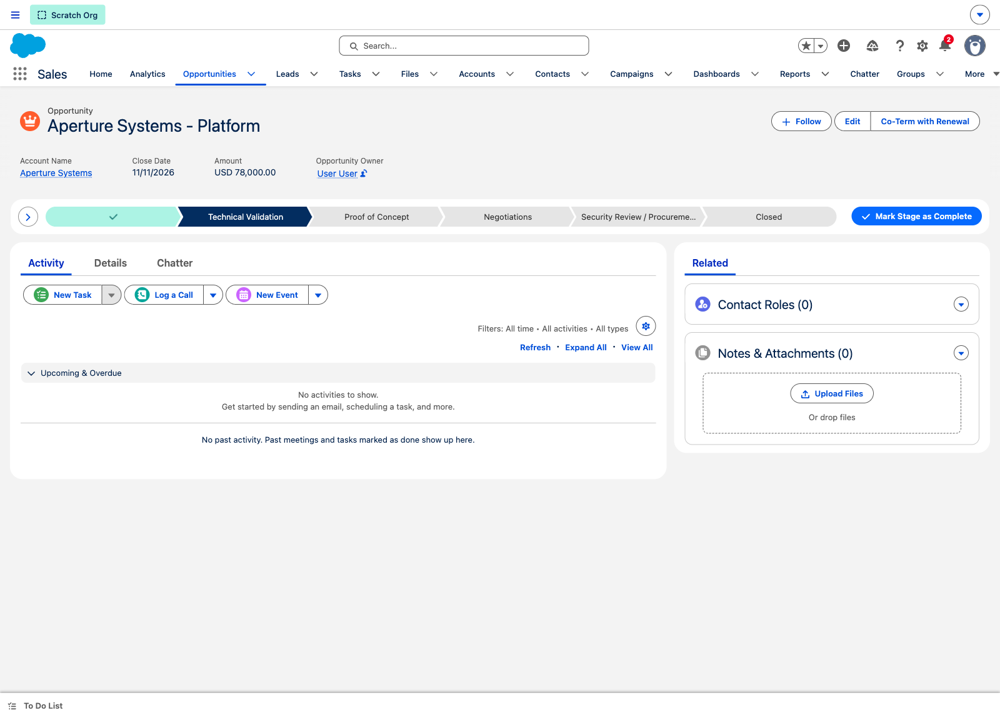
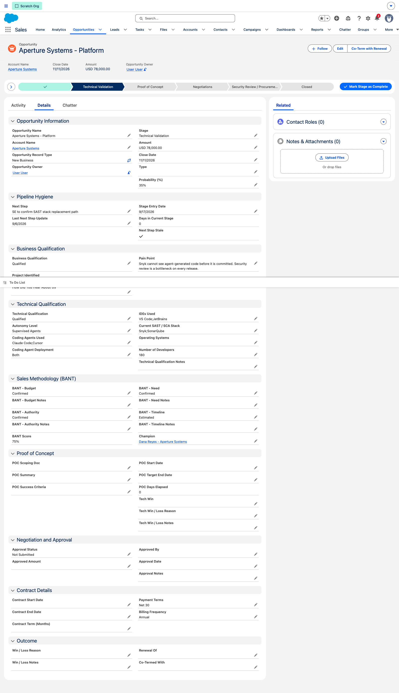
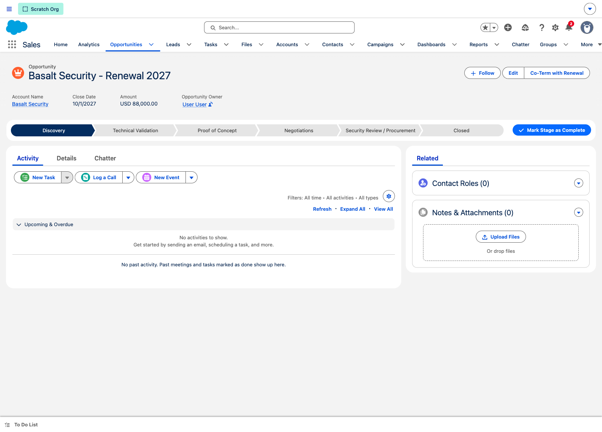
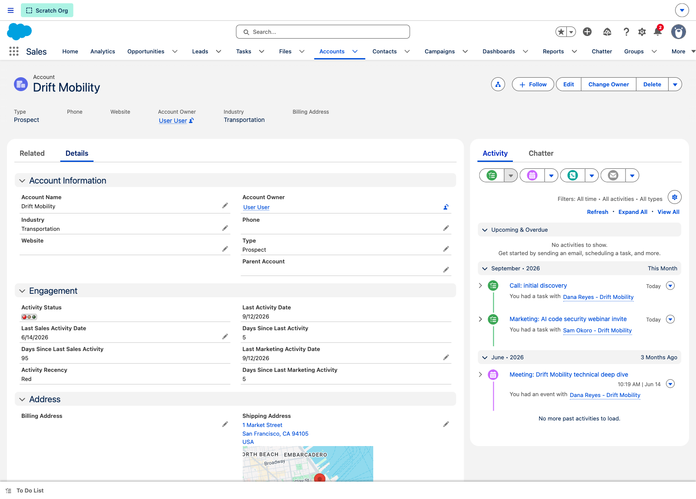
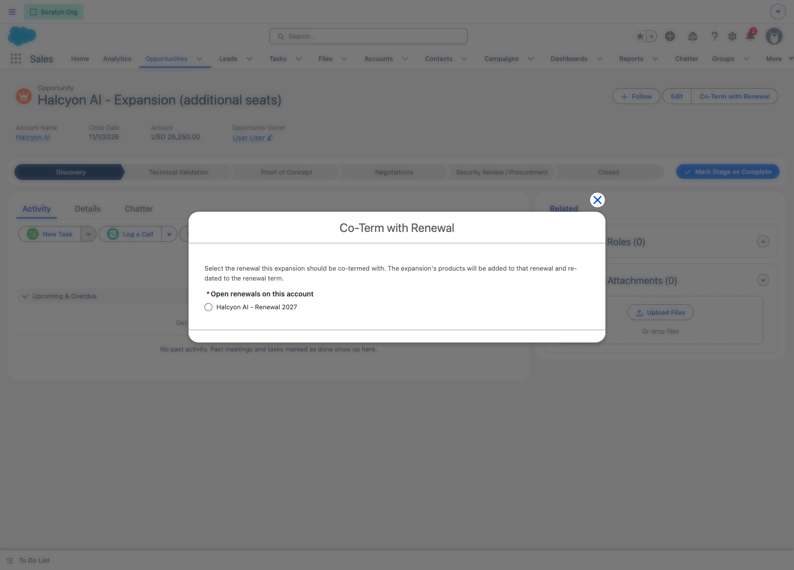
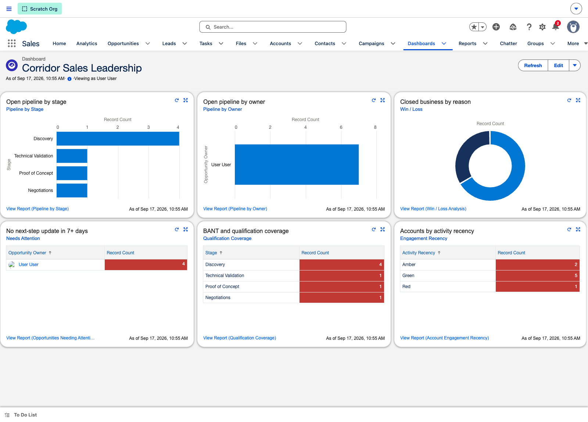

Phase 1 · Enablement & Demo Guide
Every click path, every example record, and the six workflows that carry the process — built from the design approved on 17 September and running in a live org.
Corridor's lead-to-revenue process mapped onto the RevOps bowtie — a funnel narrowing to the deal, then widening into the customer relationship. Every stage below is real configuration, not a diagram.
Where the knot sits. Stage 04 is the pivot — everything left of it is about deciding whether a deal is real, everything right of it is about keeping and growing it. Corridor's two qualification gates sit just before the knot, which is why pipeline downstream of them can be trusted.
The SaaScend default pillar set, adapted to what Phase 1 actually delivers. ICP scoring and multi-touch attribution are Phase 2, so they are replaced here by the two capabilities Corridor did build — nothing in this guide describes something the org cannot do today.
One governed path from Lead through Contact, Account and Opportunity. Meetings live on the Lead; only a qualified lead becomes pipeline.
Business fit and technical fit assessed separately, owned by different people, both required to advance. BANT scored, threshold 75%.
Email and meetings reach the record without re-entry. Sales and marketing recency tracked separately, rolled to contact and account.
Stage-driven forecast categories, 13 reports and 2 dashboards. Leadership queries the business rather than assembling it.
Stage entry stamped automatically, next-step age surfaced, stale deals flagged. Renewals created on the win, not remembered later.
Five validation gates plus a CEO pricing approval that unlocks the move into procurement without making it.
What a person does, what the system does in response, and the exact record to open when demonstrating it. Filter by who you are talking to.
LeadsWorking LeadsNewMeetings To RunMeeting Held — the convert-or-disqualify decision pointNot Using Coding AgentsConfirmed counts toward BANT. Estimated and Partial score zero50%, Technical Qualification Not Yet AssessedProof of Concept75%, both gates Qualified — and move it. It goes through
Sales Path across the top of every opportunity. Each stage names its key fields and what is required to leave it." loading="lazy">
Aperture Systems in full — pipeline hygiene, both qualification sections, BANT at 75%, proof of concept, approval and contract. This is the design doc, rendered." loading="lazy">
Basalt Security — Renewal 2027, created by the system the moment the original deal closed won. Nobody typed this record." loading="lazy">
Drift Mobility — the Engagement section carries last sales activity, last marketing activity and a day-count for each, all maintained by the rollup flows." loading="lazy">
Co-Term with Renewal action, listing the open renewals on that account. Pick one and the expansion’s products move onto it at the renewal’s dates." loading="lazy">Everything above rests on these. If a demo only has time for a handful, take the two marked as the ones people react to.
Show this one · Pillar 05
Moving to Closed Won generates the renewal opportunity from the contract term, clones every product line onto it re-dated to the renewal period, links the two records, and fires the win and onboarding alerts. Verified live: Basalt Security won at $88,000 produced a 2027 renewal carrying both line items.
Show this one · Pillar 05
A guided action lists open renewals on the account, mirrors the expansion's line items onto the chosen one at the renewal's dates, and lets the total recalculate natively. Co-terming by hand is where expansion revenue is most often mis-dated.
Pillar 02 & 06
Business and technical qualification are assessed independently by different people and both must be Qualified. BANT scores only Confirmed answers; three of four is the bar. The business gate is re-checked at POC entry so a deal cannot slip through after leaving Discovery.
Pillar 06
The negotiated value routes to the CEO. While it is pending, the move into Security Review is refused. Approval unlocks the move — it does not make it, because the rep should still decide when the deal is ready.
Pillar 03
Every logged call, email and meeting rolls onto the contact or lead and up to the account. Sales and marketing are tracked separately so a marketing send cannot make a dormant account look active.
Pillar 01 & 05
Stage entry date is stamped on every change, giving days-in-stage and the POC clock for free. The next-step date is stamped whenever it changes, so a deal untouched for a week flags itself on a list view rather than waiting for someone to notice.
Twelve minutes, in order, building from the problem to the payoff. Every record named here exists in the org.

Corridor Sales Leadership running on the seeded data — six components, including qualification coverage and accounts by activity recency." loading="lazy">The example records, list views and gates, for anyone driving the org without this guide open.
| Record | Stage / status | What it demonstrates |
|---|---|---|
| Northwind Labs — Platform | Discovery · BANT 50% | The gate refusing a premature move |
| Aperture Systems — Platform | Technical Validation · BANT 75% | The gate passing at exactly the threshold |
| Volt Robotics — Platform | Proof of Concept · BANT 100% | POC fields, success criteria, elapsed clock |
| Meridian HealthTech — Platform | Negotiations · $120,000 | Pricing approval routing to the CEO |
| Basalt Security — Platform | Closed Won · $88,000 | Renewal auto-creation with cloned lines |
| Halcyon AI — Expansion | Discovery · $26,250 | Co-terming into an open renewal |
| Drift Mobility — Platform | Closed Lost | Technical loss, loss reason, cold account |
| Pallas Media | Lead · Disqualified | Disqualification reason retained on the lead |
| Cadence Robotics | Lead · Meeting Set | Meeting date stamped automatically |
| Object | List view | Answers |
|---|---|---|
| Opportunity | Deals Needing Attention | What have I not touched in a week? |
| Opportunity | POCs Running Now | Which proofs of concept are live, and how long have they run? |
| Opportunity | Awaiting Pricing Approval | What is sitting with the CEO? |
| Opportunity | Renewals — Next 90 Days | What renews soon? |
| Account | Cold Accounts | Who has had no sales contact in 60+ days? |
| Lead | Meetings To Run | What is booked and not yet held? |
| Lead | Working Leads | What is live, excluding converted and disqualified? |
| Transition | Refused unless |
|---|---|
| Leaving Discovery | Business Qualification is Qualified and the pain point is documented |
| Entering Proof of Concept | Both gates Qualified, BANT 75%+, amount, future close date, champion, pain point |
| Entering Security Review | Pricing approval granted |
| Closing Lost | A win/loss reason is recorded |
| Any open opportunity | Close date is not in the past |
Two things this org cannot show, by design. Slack alerts appear as in-app notifications here because a scratch org has no Slack workspace — the flows, triggers and message content are final and swapping the action is a one-line change in Corridor's sandbox. And product pricing is placeholder, pending the deal-desk sheet; every product description says so on the record.